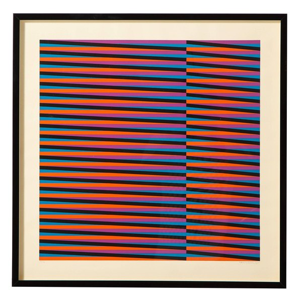
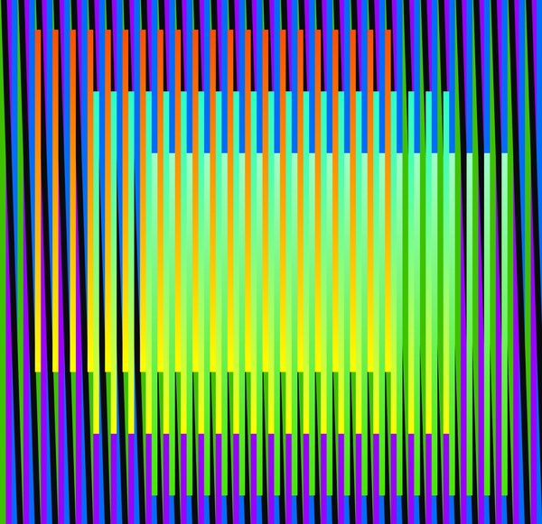
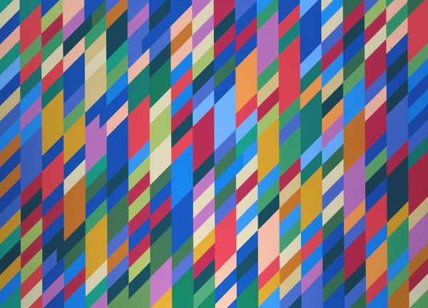
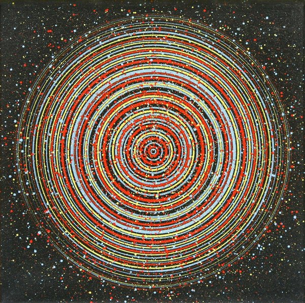
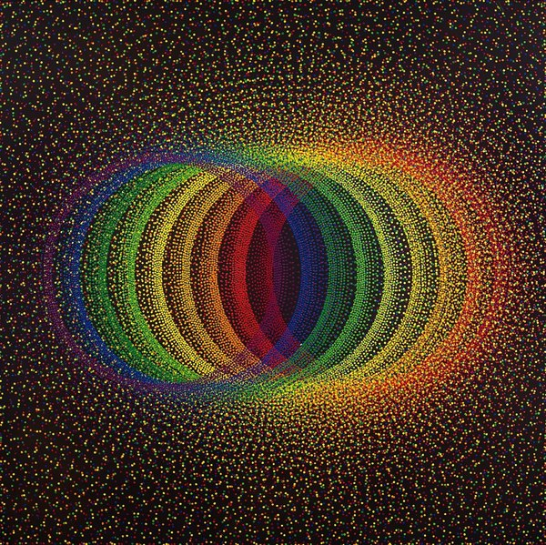
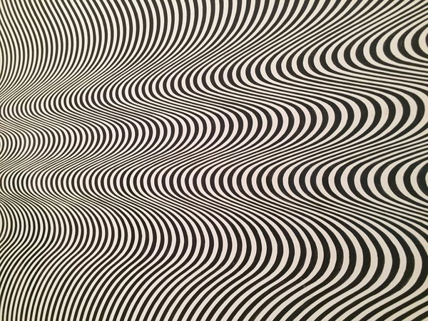
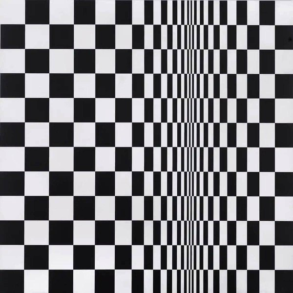

CRVI001843François Morellet - Two Warps and Wefts of Short Lines 0°–90°
1956
1956

CRVI001834Richard Anuszkiewicz - Spring Mix
2000
2000

CRVI001821Bridget Riley - Chevron composition

CRVI001847Tadasky - G-101

CRVI001842François Morellet - Bleu, vert, jaune, orange
1954
1954

CRVI001844François Morellet - Trames
1965
1965

CRVI001845Unidentified - Red and white zigzag composition

CRVI001827Victor Vasarely - Sinlag II (Blue with Red)

CRVI001851Tadasky - E-137A

CRVI001825Victor Vasarely - Keiho-C1
1963
1963

CRVI001838Carlos Cruz-Diez - Couleur additive
1970
1970

CRVI001830Richard Anuszkiewicz - The Fourth of the Three
1963
1963

CRVI001835Unidentified - Striped composition

CRVI001831Richard Anuszkiewicz - Grand Treasure
1968
1968

CRVI001848Unidentified - Concentric circle composition

CRVI001836Unidentified - Vertical stripe composition

CRVI001846Unidentified - Red lines on blue

CRVI001849Unidentified - Concentric circle composition

CRVI001823Unidentified - Coloured rhomboid composition

CRVI001826Victor Vasarely - Pal-Ket

CRVI001833Richard Anuszkiewicz - Marriage of Reds and Oranges
1992
1992

CRVI001832Richard Anuszkiewicz - Red, White and Blue, from 1776 USA 1976: Bicentennial Prints
1975
1975

CRVI001837Unidentified - Vertical stripe relief

CRVI001828Victor Vasarely - Geometric composition

CRVI001850Unidentified - Concentric circles on black

CRVI001829Victor Vasarely - Vega-Anneaux

CRVI001841Unidentified - Concentric dotted composition

CRVI001824Victor Vasarely - Zèbres
1959
1959

CRVI001840Carlos Cruz-Diez - Miércoles, from Serie Semana

CRVI001839Carlos Cruz-Diez - Chromointerférence

CRVI001819Unidentified - Wave pattern in black and white

CRVI001822Bridget Riley - The Responsive Eye
1965
1965

CRVI001820Bridget Riley - Movement in Squares